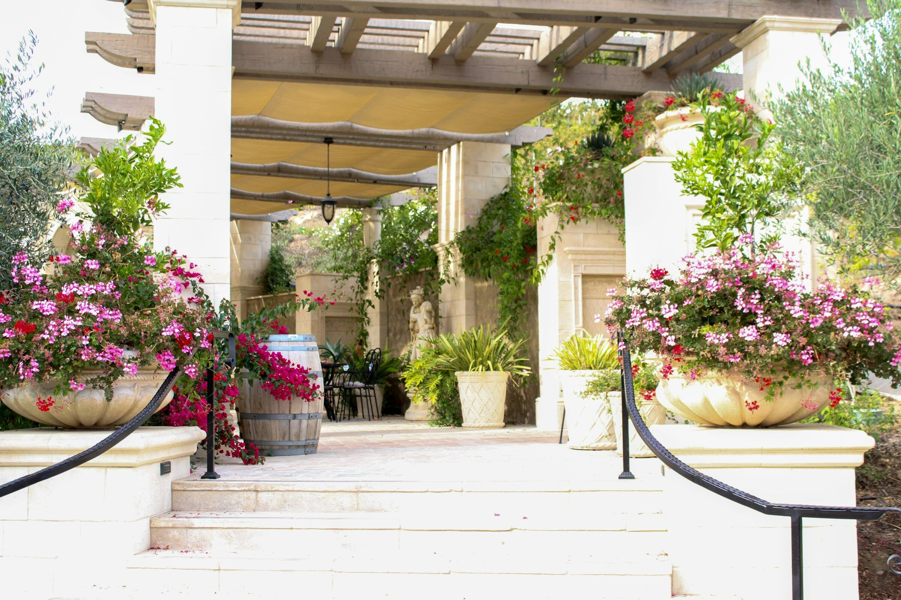
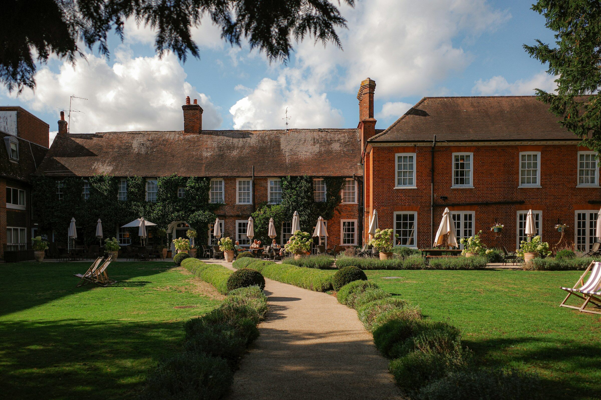

How to Choose an Offsite Venue: 10 Questions to Ask
The 10 questions to ask before booking a company retreat venue: meeting rooms, Wi-Fi, rooms, food, exclusivity, access, contracts and more.

The venue sets the mood for the whole retreat. A great one makes people want to spend time together; a poor one drains energy, however good the programme. Before you sign, ask these 10 questions.
1. Is the meeting room actually good?
Natural light, comfortable chairs, space to move and a layout you can change. Ask for photos of the room set up for your group size, not just empty. Check breakout spaces for small group work.
2. How reliable is the Wi-Fi?
Ask for the real speed in the meeting room and the bedrooms. For remote teams, bad Wi-Fi ruins the experience.
3. Can we book it exclusively?
For 15 to 40 people, an exclusive-use villa, quinta or small hotel creates a special atmosphere: no strangers, flexible timings and spaces that feel like yours. Above 40, look for boutique hotels with several event spaces.
4. Are the rooms good enough for everyone?
Check the number of single rooms available. Sharing rooms is a sensitive topic; most teams prefer single occupancy.
5. What is the food like, and can they handle every diet?
Ask for sample menus. Check vegetarian, vegan, allergy and religious requirements. Food quality is one of the top things people remember.

6. How easy is it to reach?
Count the total travel time from the main airports, including transfers. A beautiful venue three hours from the airport loses half a day on each side. Check which airports have direct flights from your team's cities.
7. What is there to do nearby?
Outdoor space, walking routes, activities and restaurants within easy reach make the programme richer. See our team-building activities by destination.
8. What's included, and what costs extra?
Meeting room hire, equipment, coffee breaks, tourist tax, service charges, minimum spends. Get everything in writing.
9. What are the cancellation and attrition terms?
How many rooms can you release, and when, without penalty? What happens if numbers drop? This matters more than most people think.
10. Who is our contact on site?
A dedicated event contact who answers quickly is worth a lot. Ask how they handle last-minute changes.
Bonus: the vibe check
Look at real guest photos, not just professional ones. Ask yourself: will our team want to sit together on this terrace in the evening?
Venues we love
We work with partner venues across Europe: quintas in the Algarve, surf hotels in Ericeira, fincas in Mallorca, wine estates in the Douro, mountain lodges in Zakopane and boutique hotels in cities. See all destinations.
Let us shortlist for you
Talk to our expert: we'll ask the right questions for you and send tailored venue proposals with programme and flights included.
Frequently asked questions
What should I look for in a company retreat venue?
A good meeting room with natural light, reliable Wi-Fi, comfortable single rooms, great food, easy access from airports and the option of exclusive use.
Is it better to book a hotel or a villa for a retreat?
For 15 to 40 people, an exclusive villa or quinta often creates a better atmosphere and can cost less. Larger groups usually need a hotel.
How far should a retreat venue be from the airport?
Ideally under 90 minutes, so arrival and departure days don't lose too much time.
Let's plan your team's next retreat
Venue, programme, activities and every participant's flight, handled by one team. It starts with a call with our expert.
Keep reading
All articles
Company Retreat Checklist: 12 Weeks to Departure
A week-by-week company retreat checklist: budget, venue, flights, programme, communication and day-of logistics, so nothing is forgotten.

How to Plan a Company Retreat: The Complete Guide
A step-by-step guide to planning a company retreat: goals, budget, destination, venue, flights, programme and follow-up, from a team that books it all.

Leadership Retreat Agenda: A 3-Day Template
A proven 3-day leadership retreat agenda with session ideas, timings, facilitation tips and the right venue, for executive teams of 6 to 25 people.